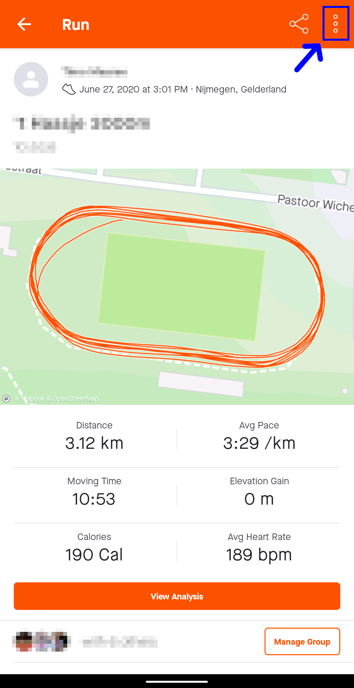
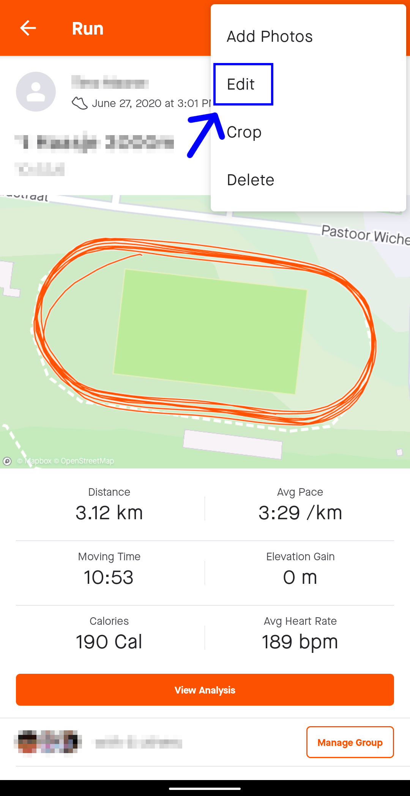
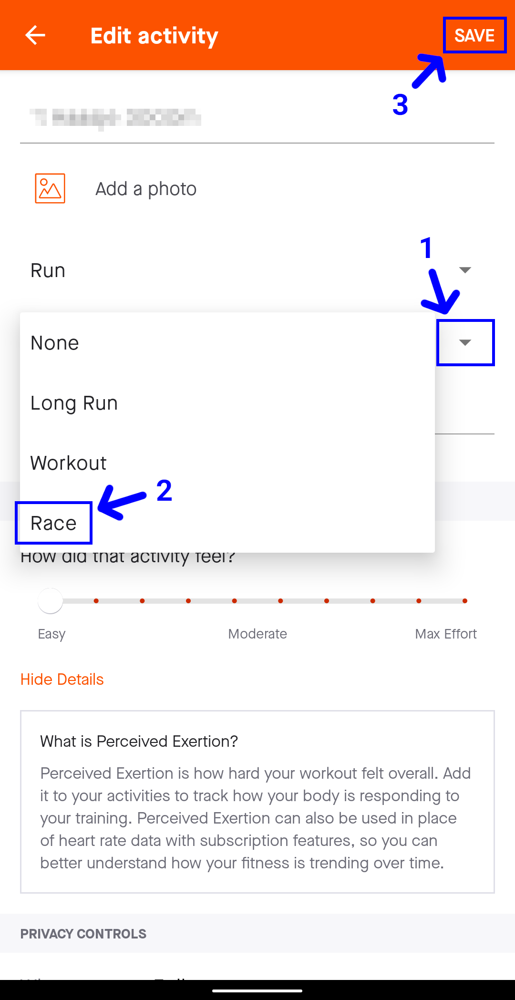
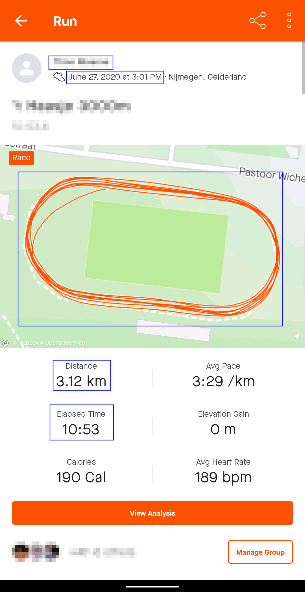

Strava screenshot guide
We recommend to record your activity using Strava. Use the steps below to make a valid screenshot from the app.
To display the elapsed time of an activity, the activity needs to be marked as a race. First open the menu.

Select the edit option.

Change the type of activity to a race and save the changes.

Make a screenshot of the activity. Note that the elapsed time is now visible, along with the name, date and time, route and distance.
